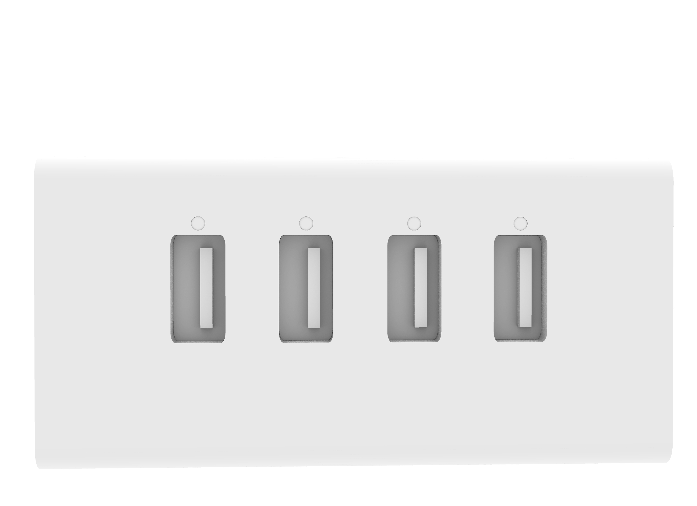

Welcome to my website!
Have fun browsing through :D
Work
Intro to techniques 2026

Almbum Cover Design on Adobe Illustrator
February 20th, 2026

Reverse engineered USB-HUB on Rhino 8
March 6th, 2026
About
Ronja Krall is an artist born in the Austrian countryside. She was raised in a small Austrian village until she moved to the state of Maine to attend George Stevens Academy. After her graduation in 2024 she moved to Vienna, for a year, to study Fine Arts at the Kunstschule Wien. The artist is currently studying in the Fine Arts program at the Cooper Union of Advanced Science and Art in Manhattan, New York City. Ronja is very interested in art as a tool of communication and its effects on social and environmental issues. The artist uses art both as a way to bring awareness to social and political issues as well as a way of understanding herself better. Ronja's goal is to pursue her love for art and use it as a tool to approach social and environmental issues.
Contact
Email: ronjakrall@gmail.com
Instagram: ronja.krall
LinkedIn: Ronja Krall